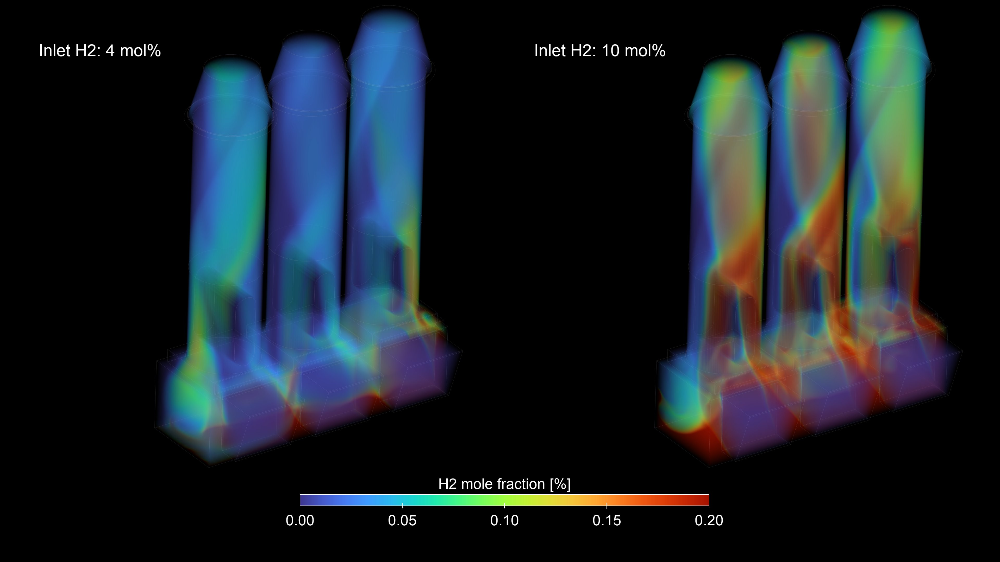
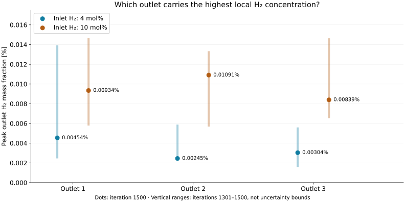
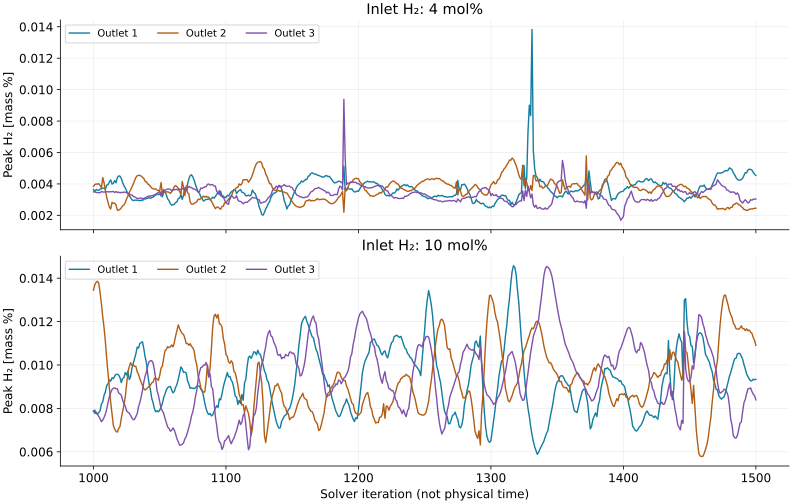

The problem
Two early hydrogen projects examined different parts of the exhaust system: a restrictive baffle and a fan-driven ventilation unit. Both required local H₂ concentrations to be considered alongside the flow conditions.
HYDROGEN / SPECIES TRANSPORT / AUTOMATION
Diluting hydrogen is also a flow-design problem: how should the exhaust mix with air, and how much resistance does the system add? This example makes those questions visible across three extraction towers.

Alberto Brambila, PhD · Species mixing, scenario comparison, Python/PyFluent meshing and solver setup.
PROFESSIONAL PROJECTS / FUEL-CELL TEST BENCHES
Two early hydrogen projects examined different parts of the exhaust system: a restrictive baffle and a fan-driven ventilation unit. Both required local H₂ concentrations to be considered alongside the flow conditions.
I compared baffle layouts and exhaust operating points, then studied reduced fan flow, inlet H₂ concentration and swirl. Species fields and pressure results helped separate mixing problems from hydraulic restrictions.
The baffle study supported a lower-resistance layout. The ventilation study identified total extraction flow as a stronger dilution driver than the tested swirl changes, helping focus the design assessment.
This three-tower model demonstrates methods from those two projects. Its geometry, 4/10 mol% cases and plotted results are separate from the industrial studies; it is not a safety certification.
01 / THE ENGINEERING QUESTION
A system-wide flow rate does not show whether hydrogen is distributed evenly. The useful comparison follows the mixture through the manifold and examines each discharge separately.
H₂ + H₂O + O₂ + N₂
One inlet · 1.315 kg/s total · 343.15 K
Mixing + fan pressure jump + swirl
↓ Outlet 1Mixing + fan pressure jump + swirl
↓ Outlet 2Mixing + fan pressure jump + swirl
↓ Outlet 3Topology schematic, not a geometry drawing. Air enters through pressure boundaries; the fan model and system resistance determine its flow.
The study compares inlet H₂ mole fractions of 4% and 10%, with nitrogen adjusted to keep the mixture sum at one. The author’s study description holds geometry, fan settings, temperatures and exhaust mass flow fixed.
Non-reacting species transport resolves H₂/H₂O/O₂/N₂ mixing. Energy transport accounts for the hot exhaust and cooler dilution air. The reconstructed setup uses k–ω SST and pressure-jump fans with swirl.
This is a mixing study. It does not model combustion, ignition or a fuel cell’s electrochemistry.
02 / FROM FIELDS TO A MEASUREMENT
The saved monitor reports the maximum H₂ mass fraction on each outlet surface. This complements the field view and avoids hiding a local concentration behind a surface average.

| Inlet condition | Outlet 1 | Outlet 2 | Outlet 3 |
|---|---|---|---|
| 4 mol% H₂ | 0.00454% | 0.00245% | 0.00304% |
| 10 mol% H₂ | 0.00934% | 0.01091% | 0.00839% |
At the final iterate, outlet 1 has the highest value in Case 1 and outlet 2 in Case 2. The histories still fluctuate, so this snapshot does not establish a stable outlet ranking. Download the displayed values and ranges (CSV) ↗
Read the concentration basis: mass fraction and mole fraction differ because molecular weights differ. The hero and monitor chart therefore answer related questions on different scales. No conversion is inferred without the local mixture composition, and these outlet reports do not provide a maximum over the entire domain.
03 / CHECK THE EVIDENCE
Plotting the monitors reveals what a single contour or endpoint cannot: whether the quantity being interpreted has settled.

Over iterations 1301–1500, the highest peak across the three outlets is 0.01383 mass% for Case 1 and 0.01457 mass% for Case 2. These ranges show why the final iterate must be interpreted with care.
Review residuals, species conservation, backflow composition and fan direction, then establish mesh and solution sensitivity. The supplied records do not include a domain-maximum monitor or a closed species balance.
04 / REPEATABLE SIMULATION
Separate mesh and solver scripts make the modeling choices inspectable and reusable. Engineering checks remain part of that workflow.
Discovery geometry → Watertight Geometry workflow → four connected fluid regions, polyhedral cells and smooth-transition layers.
Explicit species, materials, fan interfaces, boundary conditions, expressions and outlet reports. The setup driver does not read a SET file at runtime.
Check real zone types and fan assignments, then parse the monitor histories with Python and retain units, iterations and provenance.
The prior development record describes a meshing update that reported completion while leaving boundary types unchanged. Supplying the workflow’s starting-state arguments resolved it.
A second check found fan interfaces left as ordinary internal faces. Valid outlet reports had not detected the missing fan model. Explicitly inspecting those interfaces made the check meaningful.
The separate PyFluent drivers expose their configuration near the top of each script. WFT and SET references are retained privately to preserve the original modeling choices alongside the code.
This demonstrates automation of repeated preparation and checking. No measured time saving or automatic full operating-matrix run is claimed.
The hero uses a 0–0.20 mol% display range, not a domain-maximum report. The retained SET supports Case 2; the Case 1 label follows the author’s context and archive. Supplied histories are separate from the setup-only script checks.
The prior reconstruction record reports 2,606,549 reference cells and 2,606,683 rebuilt cells, minimum orthogonal quality 0.24 and maximum surface skewness 0.48. Similar cell counts do not establish mesh independence.
The retained driver uses 20–30 mm surface sizing and approximately 87.4 mm maximum volume size. Its turbulence and material choices include assumptions documented during reconstruction. Report evaluation used hybrid initialization; the driver does not run the supplied 1,500-iteration campaigns. No Fluent solve was performed for this publication.
05 / EXPERIENCE THAT TRANSFERS
Species transport, hydraulic reasoning and controlled scenario comparisons apply to other gas-handling systems. The transferable skill is connecting a concentration field to a design decision.
Connect mixture composition and flow distribution to local concentrations. Applicable to gas dilution, ventilation and mixing systems.
See the physical model ↑Define what changes between cases, then compare the same measurement at every outlet. The professional work also examined baffle and fan-operating changes.
See the comparison ↑Distinguish mass from mole fraction, local maxima from averages, and saved iterates from converged results.
See the checks ↑Turn the mesh, setup and report-processing sequence into configurable steps with explicit verification.
See the workflow ↑Alberto’s professional project record includes baffle/back-pressure comparisons and ventilation studies varying fan flow, inlet H₂ and swirl. Those are separate studies with their own conditions and evidence. Their industrial results and acceptance decisions are not attributed to this demonstration.
The selected geometry and author-supplied visualization illustrate related engineering skills. No commercial equipment identity or certified manufacturer fan curve is asserted. Implementation files and complete histories remain private.
Selected engineering evidence is public. Scripts, CAD, detailed settings and complete source histories are maintained privately.
{kind=link}